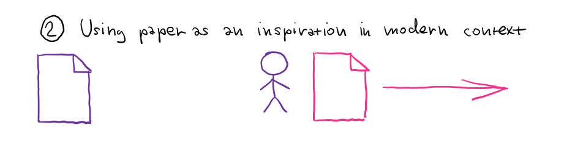

Papers we Scrutinize How to critically read papers
As someone who enjoys being at the intersection of the academic world and the world of industry, I'm very happy to see any attempts at bridging this harmful gap. For this reason, it is great to see that more people are interested in reading academic papers and that initiatives like Papers We Love are there to help.

There is one caveat with academic papers though. It is very easy to see academic papers as containing eternal and unquestionable truths, rather than as something that the reader should actively interact with. I recently remarked about this saying that "reading papers" is too passive. I also mentioned one way of doing more than just "reading", which is to write "critical reviews" – something that we recently tried to do at the Salon des Refusés workshop. In this post, I would like to expand my remark.
First of all, it is very easy to miss the context in which papers are written. The life of an academic paper is not complete after it is published. Instead, it continues living its own life – people refer to it in various contexts, give different meanings to entities that appear in the paper and may "love" different parts of the paper than the author. This also means that there are different ways of reading papers. You can try to reconstruct the original historical context, read it according to the current main-stream interpretation or see it as an inspiration for your own ideas.
I suspect that many people, both in academia and outside, read papers without worrying about how they are reading them. You can certainly "do science" or "read papers" without reflecting on the process. That said, I think the philosophical reflection is important if we do not want to get stuck in local maxima.
Different ways of misreading papers
Just like other sciences, computer science often gives the impression that its development follows a direct line forward. There is some ideal goal towards which we are getting closer and closer. This is the idea of scientific progress that most reasonable people accept. However, the line is not as straight as it may look. What is the "ideal goal" changes, we may never actually get there and the line occasionally gets stuck in circles or even goes backwards before turning forwards again. What are some of the common irregularities to be aware of (not just) when reading papers?
The medium is the message
The first thing to keep in mind about academic papers is that, to quote Marshal McLuhan, medium is the message. Papers are a specific format and the nature of the format partly limits what you can find in papers. What do you find in programming language papers? A minimal calculus or a formalization is the perfect kind of content, because it presents an idea in a static way that fits in the limited space of a paper, can be printed and can be comprehended by reading.
The format affects not only what answers we give, but also what questions we ask. If the format makes it easy to discuss formal calculi, it is not surprising that we will ask questions about properties of the formal calculi. As noted by Hacking in Representing and Intervening, there is also "a certain class or caste difference between the theorizer and the experimenter" and "we find prejudices in favor of theory, as far back as there is institutionalized science". What this means is that academic papers are much more likely to discuss a theory. However, this is not necessarily because the theory provides a deeper insight – it might as well be a combination of the format constraints and scientific prejudices.
Would other formats emphasize different aspects of research? I think they would. A good example is the Future Programming workshop, which invites submissions in form of videos or screencast and also the Distill journal. In both cases, you can see a lot more focus on user interaction and presentation of a rich experience, using one particular demo as the medium for explanation.
Historical context matters

Another important thing to keep in mind when reading papers is that they were written in some historical context. The things that mattered when the paper was written were quite likely different than the things that matter now. Our current perspective gives us the benefit of hindsight that the authors did not have. We can easily read the paper as saying something that we can clearly think only now that we have a lot more context.
I think this is a mistake that many people make when watching the great talk The Future of Programming by Bret Victor. You can easily get the impression that everything has been invented in 1960s, but that is only because you can extrapolate the ideas in the right direction. This is something that the authors could not easily do, because there was no clear direct line forward. Incidentally, I think many people miss the key message of the talk which is, I think, that "the real tragedy would be if people forgot you can have new ideas about programming models in the first place".
Reading history backwards and forwards
When reading a paper, we know what happened as a follow-up to the paper. We know how the ideas got used later and how the concepts introduced in the paper evolved and changed. If you try to see the paper from a historical perspective, it is easy to fall into a trap called Whig interpretation of history. In other words, you can read the paper as if the participants knew where they are going. To paraphrase closing chapters of David Wootton's The Invention of Science, history should not be read just backwards with the benefit of hindsight, but also forwards as it happened.
What do we lose by reading papers with hindsight rather than trying to see them in their original context? To be fair, a typical scientist probably sees science as following a (mostly) direct line and so they do not distinguish between the backwards and forwards reading. They just read papers using the backwards view (as leading towards the current state of the art). I think this is a shame, because you will miss the most interesting intellectual achievements that the paper made. Those are often subtle reformulations of the past theories so that they fit a different world-view that later becomes dominant. I believe that in programming languages research, we often praise papers for (minor) contributions within the new world-view rather than for the (major) shift in thinking that preceded it.
Literature and attribution of responsibility
Finally, one more way in which papers are often misread is when it comes to their contributions. This topic is nicely discussed by Bruno Latour in chapter on literature in Science in Action. The summary is that the future of a paper often lies in the hands of those who follow-up on the work and refer to the paper.
In other words, we are obsessed with the idea of the role of an individual paper in the history.
What makes a paper important is not just the ideas that appear in it, but also all the follow-up
work that applied the ideas in a wide range of contexts. This is especially the case in programming
languages research, where good papers can change how we think about a problem. For example, I doubt
monads would arguably never become so popular if they did not get used for I/O in Haskell and
were not supported by the do notation – yet, we attribute much of the credit to a paper that
did only some of the work (and there is no paper on the do notation!)
Different ways of reading papers
In the previous section, I went through a number of caveats which suggest that it is useful to be careful when reading academic papers. I am not saying that you absolutely need to be aware of those when reading academic papers, but if you keep those in mind, you can get a lot more from a paper than you would otherwise. In other words, they open several new ways of reading papers.
I think there are three different ways of reading papers. All of them are perfectly reasonable and useful ways of reading, but you learn different things when following different styles of reading and it is useful not to confuse them. To explain the different styles, I will use the paper A Formulation of the Simple Theory of Types by Alonzo Church, which introduced typed λ-calculus. Most people reading academic papers will probably follow a mix of the first two readings:

#1 Contribution to linear science
As mentioned earlier, sciences often fabricate the impression that research follows a linear straight line forward towards some ideal knowledge. It is easy to ignore that the direction changes and the line is not always straight. When read in this way, a paper will appear as contributing a step along the direct line towards the ideal knowledge.
This is a useful way of reading paper for a scientist, because it gives us a sense of direction that we can follow and extrapolate. It also provides grounding for the current research work. Reading the paper by Alonzo Church in this way, you can see it as a basis for typed functional languages such as Haskell. You can trace many functional programming ideas back to this paper. Using this reading, it is easy to believe that functional programming is the right direction for programming language research, because it has solid theoretical foundations.
#2 Inspiration in modern context
Another way of reading a paper is to see it through the current perspective, but without worrying about the historical implications of the paper. Here, we project the paper into our current way of thinking about the subject and we look at what it says about the topics we are now interested in. This "projection" may change meaning of some of the things from the paper. Some may even become unintelligible and you will probably skip them while reading.
This way of reading papers is also useful, but for different reasons. Sometimes, older papers contain ideas that were forgotten or start making new sense when you project them into the current modern perspective. In other words, you may get interesting new inspiration that the author could not expect. Going back to Alonzo Church, perhaps you can read the paper, find something interesting about the way the paper constructs hierarchy of types from \(o\) and \(\iota\) and use it for a novel way of constructing types in programming languages.
#3 Contribution within historical context

Finally, the third way of reading a paper that I can think of is to try to understand it forwards within its original historical context. Here, we project ourselves back to the time when the paper was written and try to understand what the author was thinking when writing the paper. You can also try to follow the paper through the history and see who it actually influenced. A nice example of this approach is a talk by Mark Priestley where he traces the origins of LISP.
Looking at the paper by Alonzo Church, we now need to see it as a contribution to foundations of mathematics, rather than a paper on programming languages. Church was trying to reconcile two mathematical concepts that can be used to formalize foundations of mathematics: Theory of types by Bertrand Russell and the λ-calculus. This way of reading is perhaps the hardest one, because we need to forget everything we know and think in a completely different context that is very hard to reconstruct.
Papers we should scrutinize
Unless you are trying to reconstruct the meaning of a paper within its original historical context, which is the hardest way of reading papers, the person who is reading the paper is an important part of the image. In the first case, the reader is looking at the paper through their current perspective and will find different aspects of the paper interesting than other readers. In the second case, the paper is a source of inspiration and so what the reader learns might be a completely new interpretation that combines ideas from the paper with the reader's background.
For this reason, I suggested that "reading papers" is too passive activity when interacting papers. This is especially the case when the reader is someone with quite different background and way of thinking that those from the small circle of experts who typically read academic papers. In other words, if you are a member of Papers We Love, I think that describing your way of understanding an academic paper would be a more valuable contribution than you might think.
In the Twitter chat, I suggested that people can write criticism of papers. By this I mean something along the lines of critical reviews from literature – a commentary discussing what aspects of the paper lead to your way of working and what aspects of the paper provide inspiration in your context. Writing a critical commentary may sound like a daunting task, but keep in mind the "prejudices in favor of theory" that I mentioned earlier. A part of the aura of perfectness that surrounds academic papers comes from the format and a commentary from someone operating in a different context than the authors (say, someone working in the industry) can be an extremely valuable bridge between the two worlds.
Summary
This blog post evolved from my remark a couple of months ago that "reading papers" is too passive. Academic papers often give the impression that they represent eternal truths and all you can do with them is to try to comprehend those truths. However, this is not really the case – if you read a paper, you are almost always combining something that is written in the paper with your current context and interests. In a small community of academics where the context and interests are very close, this might not be as interesting, but if the reader comes from a more different perspective, the resulting mix might very well be innovative and worth recording. For this reason, I think reading should not be passive, but papers should instead be actively scrutinized and criticized.
References
- Hacking, I. (1983). Representing and Intervening: Introductory Topics in the Philosophy of Natural Science, Cambridge University Press
- Wootton, D. (2016). The Invention of Science: A New History of the Scientific Revolution, Allen Lane
- McLuhan M. and Q. Fiore (1967). The Medium is the Massage: An Inventory of Effects, Penguin Books
- Latour, B. (1987). Science in Action: How to Follow Scientists and Engineers Through Society, Harvard University Press
Published: Wednesday, 12 April 2017, 2:05 PM
Author: Tomas Petricek
Typos: Send me pull request!
Tags: academic, programming languages, philosophy